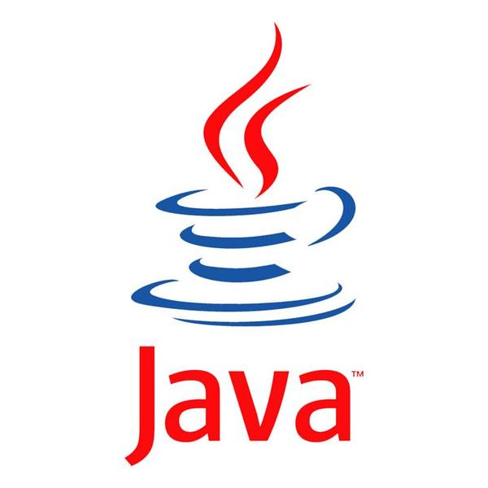
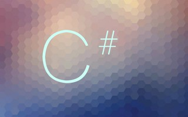
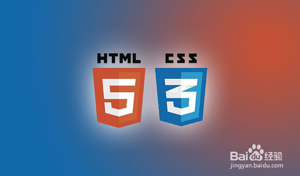
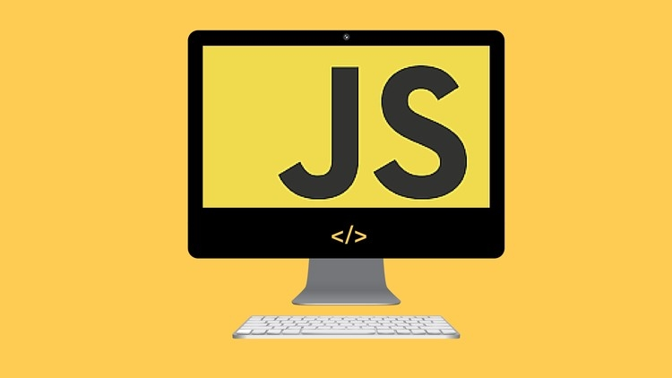

编程学习之路

编程的入门之学，记得当时C语言的指针还是很是懵懂，两年过去，即使已经学过更为好用的语言，也不用为指针而发愁，但它永远是我心中的经典和回忆

C语言的升级版，我所学的第一门面向对象的语言，接触到类等新的概念，面向对象语言的出现大大简化了编程量，使代码的重用变得简单

当时学这门语言和C++在同一学期，两个学着都感吃力，也是这门课第一次接触到编程语言的图形界面，对编程有了学习的动力，在后续的数据库这门课上，手工Java编用户界面，真的是相当不容易

这门语言是我自学的，学它还是因为数据库这门课，后来发现它可以用来开发Unity游戏，对它的学习兴趣更为充足

勉强将他们算作编程语言吧，也是本学期开始后在多媒体还未讲到网页制作前就在w3chool上简单的学习了，学着是比较简单的，但要做好一个好看的网页着实不是一件简单的事，从我做的网页上就可以看出。。。

JavaScript就像一个全新的编程语言，它和CSS一样可以直接嵌入在html中，对于它只是简单的了解。Jsp可以嵌入java语言，可以写入html，与Asp同时占据动态网页建设的半壁江山，同样正在学习中